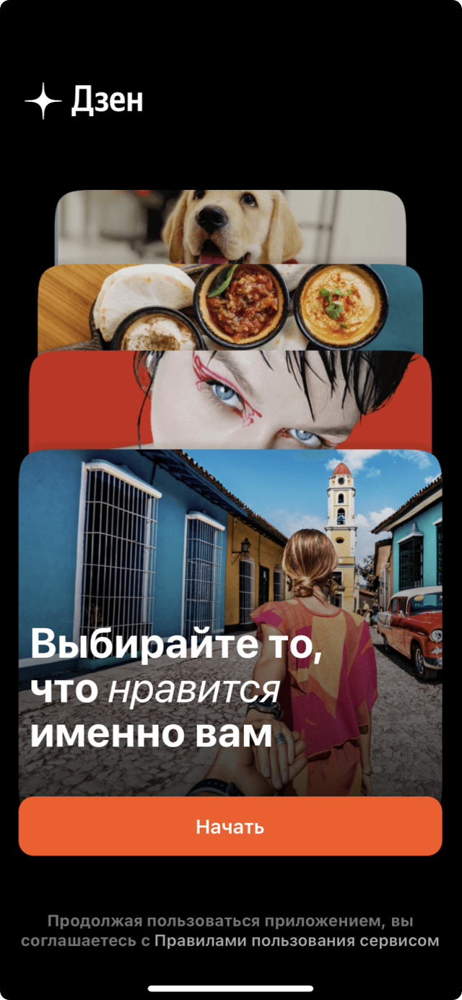
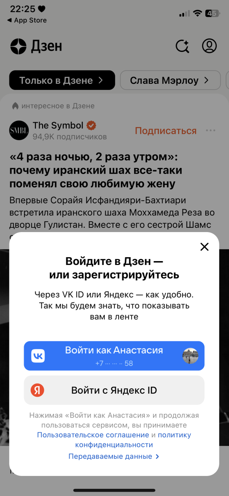

← Все кейсы
UX-исследования · Digital Camp · 2023
VK Education × Дзен
В рамках программы VK Education работала над учебным UX-исследованием для платформы Дзен



Исследование
Командный проект: как помочь новым пользователям быстрее найти в Дзене интересный контент и привлечь аудиторию моложе 35 лет.
- Оценили рынок и конкурентов, провели SWOT-анализ
- Провели интервью с 4 опытными и 4 новыми пользователями Дзена
- Нашли проблемы: новичкам трудно найти интересных авторов, лента долго подстраивается под интересы, рекомендации часто не совпадают с ними
- Сформулировали гипотезу: рекомендации на основе данных из сервисов VK через вход по VK ID помогут новичкам и повлияют на Retention, Sticky Factor, Timespent и MAU
- Спроектировали прототип онбординга с выбором интересов и входом через VK ID
Обучение
Прошла курс «Digital Camp | UX-исследования» от VK Education. Программа включала 24 занятия и 60 академических часов. Сертификат выдан в июне 2023 года.
Другие исследования
В Set Loyalty проводила UX-исследования с клиентами, в том числе с представителями «Ленты» и «ВинЛаба»: интервью, юзабилити-тесты и проверку прототипов. В магистратуре Университета ИТМО провела сравнительный эксперимент и тестирование доступности с участием слабовидящих пользователей.